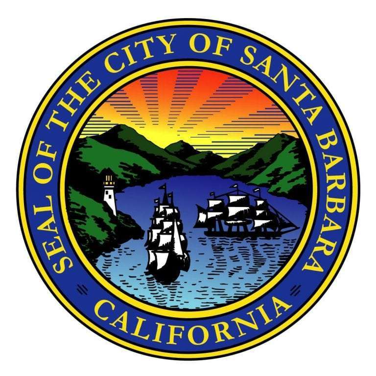

City Snapshot
Santa Barbara is a coastal city on California’s Central Coast, known for its Mediterranean climate, Spanish Colonial Revival architecture, and dramatic backdrop of the Santa Ynez Mountains. Long before Spanish settlement, the region was home to the Chumash people, who built thriving coastal villages and traded extensively along the Pacific. In 1782, the Presidio of Santa Barbara was established, and Mission Santa Barbara followed in 1786, shaping the area’s architectural and cultural identity through the mission era and beyond.
In the American period, Santa Barbara evolved from a ranching community into a resort and university town, anchored by institutions like UC Santa Barbara and a diverse economy spanning tourism, education, agriculture, and technology. The city’s planning after the 1925 earthquake codified its signature white-stucco, red‑tile aesthetic, which remains a defining feature of its built environment.
Environmentally minded and outdoor‑oriented, Santa Barbara balances coastal preservation with urban amenities—beaches and the harbor sit minutes from theaters, restaurants, and museums along State Street. The 1969 Santa Barbara oil spill helped catalyze the modern environmental movement; local activism contributed to early Earth Day observances in 1970, a legacy that continues through regional conservation and sustainability efforts.